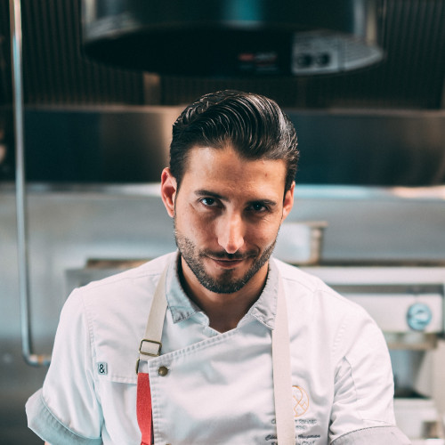

Meet our team
Caoimhe
manager
Caoimhe started at Martin’s back in 2012. Originaly from London where she study business at King’s College. She is responsible for for controlling and overseeing the entire organization.
Padraig
head chef
Padraig joined Martin’s grill when he was 17. He started as a kitchen porter a made his way up to the head chef. He is the brain of the kitchen always coming up with new recipes. Padraig is also selecting our beef suppliers.

Lucy
sous chef - pâtissier
Best Dublin’s dessert chef in 2020. Lucy is the reason why Martin’s introduced desserts on the menu. She also studies culinary arts and is responsible for dairy suppliers.